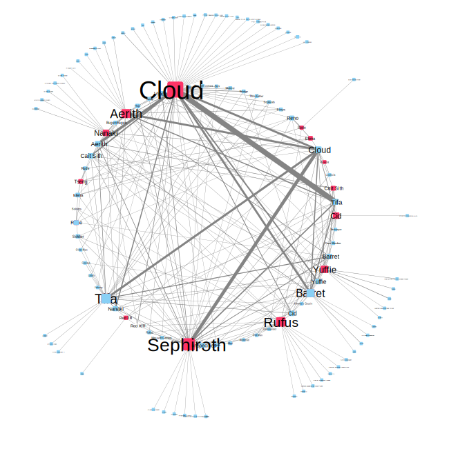

The graph here lets us see the number of times each character speaks relative to every other character per scene. This is relevant
to our research question, as it lets us see the impact that each character has on
the story.
Proportion of speeches per character per scene
Cloud is Cyan
Barret is Gray
Tifa is Black
Yuffie is Green
Nanaki is Orange
Vincent is Red
Cid is Yellow
Aerith is Pink
Cait Sith is White
Other Characters are Blue
This graph shows the totaly number of times each playable character speaks in the game in total.
Cloud is Cyan
Barret is Gray
Tifa is Black
Yuffie is Green
Nanaki is Orange
Vincent is Red
Cid is Yellow
Aerith is Pink
Cait Sith is White
Other Characters are Blue

The graph you see above is designed to highlight the relations between speaker and referents. The speakers are blue and the referents are pink. When the lines are more bold, they show that they are referred to more frequently by the speaker. Only a certain number of characters have been given referent tags as this had to be done manually. The characters given referent tags were the party members and most important villains (Sephiroth, Rufus Shinra, and the Turks).